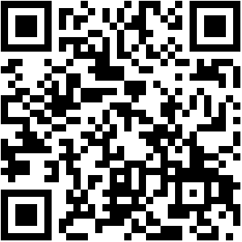
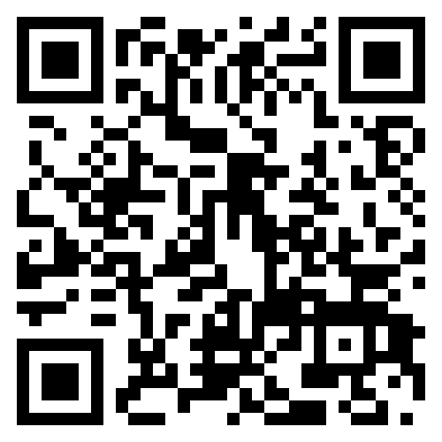
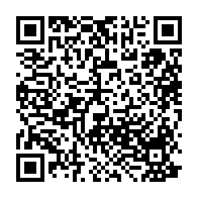
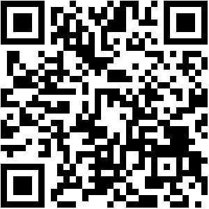
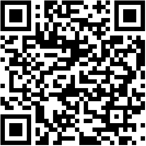

CV verkstad
Vi ger dig tips på vad är bra att tänka på när du skriver CV.
Vi skriver CV tillsammans.

Intervjuträning
Vi tränar på hur du förbereder dig inför intervju.
Vi övar i gruppen med varandra.
Bransch- och yrkesvägledning
I Bransch- och yrkesvägledning fördjupar vi oss i olika yrken och branscher i Sverige.
Du kommer också att få lära dig hur du kan söka information om arbetsmarknaden och om olika yrken.
Gruppvägledningen hålls på lätt svenska (Lägst sfi C- eller D-nivå)

IT grund
Du lär dig grunderna i hur du använder en dator.
Vi träffas fyra gånger och lär oss bland annat:
- att använda en dator och söka information på internet
- att kommunicera digitalt – e-post och videomöte
Digital vardag - kurs i mobil
Du lär dig om digitala tjänster på din mobil.
Vi träffas fyra gånger och lär oss:
1. om din smartphone och dess olika funktioner
2. att söka information på internet
3. att använda olika digitala tjänster

Individuellt samtal med digital coach
Tillsammans planerar vi hur du kan öka dina digitala kunskaper.
- Vi pratar om vad digital kompetens är
- Vi identifierar dina digitala kompetenser
- Vi skapar en plan hur du kan nå dina mål.

Informationsmöte om föreningsaktiviteter
Välkommen till ett informationsmöte där du kan anmäla vilka intressen
du har och bli matchad till en föreningsaktivitet.
Målet med en föreningsaktivitet är att:
- stärka dig i svenska språket
- stärka din hälsa
- få ett nytt nätverk
